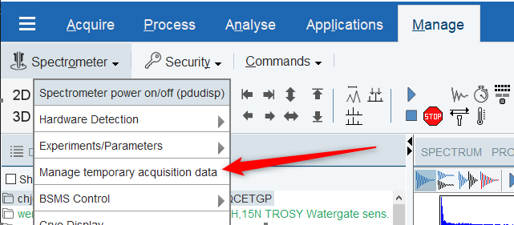

deletetmpfiles
NAME
deletetmpfiles - Delete temporary acquisition data files
DESCRIPTION
On a spectrometer, by default, all data stored temporarily on the EPU during an acquisition are deleted after completion of the experiment. This automatic deletion routine can be modified by clicking Manage | Spectrometer | Manage temporary acquisition data (or entering the command deletetmpfiles).

The file tree in the main window displays only the data of those experiment numbers which were created by the same user which currently uses TopSpin:
Any temporary acquisition data of other users are not shown, i.e. also cannot be modified by the current user.
The dialog appearing via the menu Preferences | Edit temporary acquisition data preferences was slightly reorganized:
It is not possible anymore to define an expire policy and a disk space policy at the same time, the user has to choose between those options.
The default setting is Delete acquired data immediately.
The functionalities of the Reload- and the Delete-Button in the main window basically remain unchanged except for the user restrictions for the data displayed, as mentioned above.
Furtherrmore the main window of the Temporary acquisition data - dialogue shows a Download-Button.
Via this button, the user can copy the experiment directories which were selected in the file tree from the EPU into an arbitrary directory on the workstation.
Clicking Download opens a common file dialogue (shown below for a Windows - workstation) where the user can choose or create a target directory on the workstation:
Clicking Cancel aborts the copy process.
Clicking Open starts the copy process and yields a message in case of success:
Notice: Data copied from EPU to workstation are still present on the EPU afterwards. They have to be explicitly deleted by either clicking the Delete - button or by changing the deletion policy.